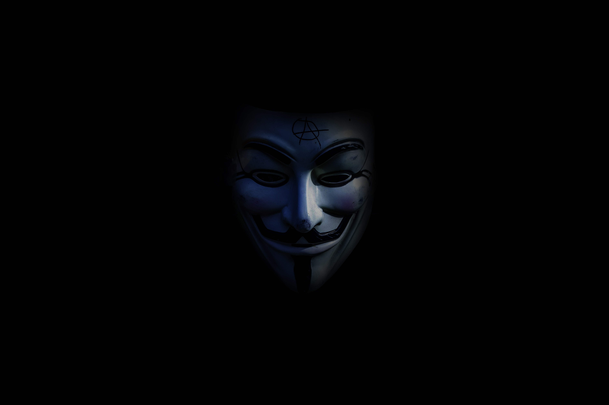

“This is our world now... the world of the electron and the switch, the beauty of the baud. We make use of a service already existing without paying for what could be dirt-cheap if it wasn't run by profiteering gluttons, and you call us criminals. We explore... and you call us criminals. We seek after knowledge... and you call us criminals. We exist without skin color, without nationality, without religious bias... and you call us criminals. You build atomic bombs, you wage wars, you murder, cheat, and lie to us and try to make us believe it's for our own good, yet we're the criminals. Yes, I am a criminal. My crime is that of curiosity. My crime is that of judging people by what they say and think, not what they look like. My crime is that of outsmarting you, something that you will never forgive me for.”
Anonymous Website Tribute
Anonymous originated in 2003 on the image board 4chan representing the concept of many online and offline community users simultaneously existing as an "anarchic", digitized "global brain" or "hivemind".
